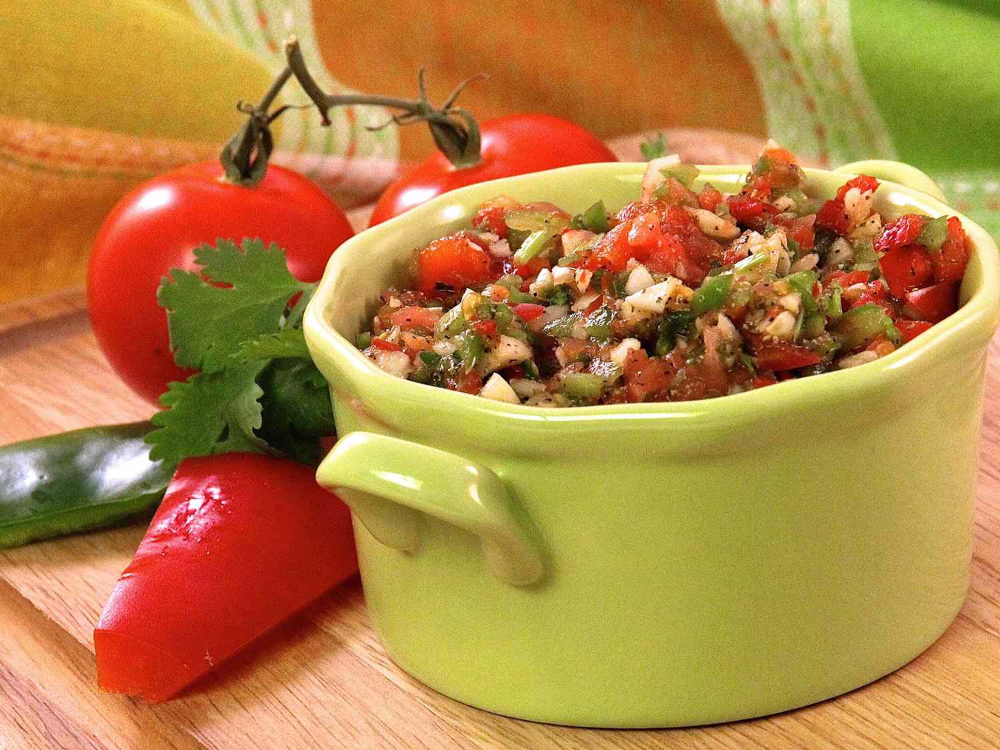

Sofrito

Photo by lutzflcat
Sofrito is an important component to many Puerto Rican dishes. It's good to have some on hand if you're looking to achieve a more authentic flavor when making rice, beans, or empanadas.
Ingredients
- 10 ají dulce peppers
- 4 onions
- 3 medium tomatoes
- 2 green bell peppers
- 1 red bell peppers
- 3 medium heads garlic
- 25 cilantro stems (with leaves)
- 25 recao stems (with leaves)
- 1 tbsp. salt
- 1 tbsp. black pepper
Steps
- Remove tops from ají dulce peppers
- Cut onions into large chunks
- Chop tomatoes
- Seed and chop bell peppers
- Peel garlic
- Combine peppers, tomatoes, onions, and garlic into a bowl or food processor and mix together
- Add cilantro and recao stems, salt, and pepper
- Mix or process until the sofrito is thick and slightly chunky
- Store in a jar or resealable plastic freezer bag. Can be frozen if you wish to store it for a longer period.
Recipe by FIVEBRIGS on allrecipes.com